Simulación y análisis de circuitos
Simulación y análisis del comportamiento de circuitos electrónicos, estudio de señales y comprobación de diseños.
Estudiante de Ingeniería Electrónica
Universidad Surcolombiana
Un espacio dedicado a compartir proyectos, experiencias y desarrollos tecnológicos, aplicando los conocimientos de ingeniería al diseño y construcción de soluciones.
Mi formación, mis intereses y la motivación que impulsa mi crecimiento en la ingeniería.
Soy estudiante de Ingeniería Electrónica de la Universidad Surcolombiana. Me caracterizo por ser una persona creativa, comprometida y con una actitud constante hacia el aprendizaje. Disfruto del trabajo colaborativo, el intercambio de ideas y la participación en proyectos que representen nuevos desafíos y oportunidades de crecimiento personal y profesional.
Durante mi formación académica he desarrollado un especial interés por la electrónica, el diseño y análisis de circuitos y el desarrollo tecnológico. Asimismo, me interesa fortalecer mis capacidades en razonamiento lógico-matemático, resolución de problemas, comunicación y trabajo en equipo.
Me motiva comprender el funcionamiento de los sistemas electrónicos, explorar diferentes alternativas y aplicar los conocimientos teóricos en proyectos prácticos.
Mi propósito es continuar desarrollando mis competencias técnicas y profesionales, adquirir nuevas experiencias y participar en la creación de soluciones innovadoras que contribuyan al desarrollo de la ingeniería electrónica.
Ingeniería Electrónica
Universidad SurcolombianaCreatividad e iniciativa
Aprendizaje continuo y trabajo colaborativoHerramientas y conocimientos que he fortalecido durante mi formación académica y el desarrollo de prácticas y proyectos de electrónica.
Simulación y análisis del comportamiento de circuitos electrónicos, estudio de señales y comprobación de diseños.
Elaboración de diagramas esquemáticos, organización de componentes, diseño de pistas y desarrollo de placas de circuito impreso para prototipos electrónicos.
Desarrollo de código para microcontroladores, implementación de lógica de control e integración de sensores y actuadores en prototipos electrónicos.
Manejo de instrumentos para observar señales, generar formas de onda y analizar el comportamiento de circuitos electrónicos.
Ensamblaje de circuitos, conexión de componentes, pruebas de funcionamiento y construcción de prototipos como parte del proceso de desarrollo.
Un espacio para conocer los proyectos que he desarrollado, sus objetivos, procesos de diseño, implementación y resultados.
Aquí se publicarán los proyectos y desarrollos tecnológicos.
Diseño y evolución de una tarjeta de expansión para PSoC 5LP, orientada al monitoreo preventivo de gases mediante sensores MQ.
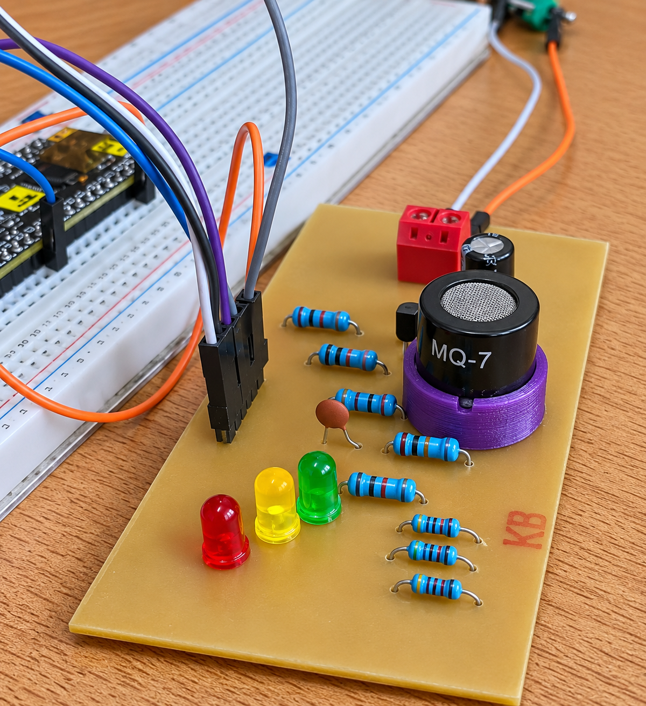
GasShield 5LP surge de la necesidad de contar con un sistema instrumental que permita advertir la presencia de gases durante los procesos de calcinación realizados en el Laboratorio de Aguas de la Facultad de Ingeniería de la Universidad Surcolombiana. En este espacio, la combustión de materia orgánica puede producir diferentes compuestos, entre ellos monóxido de carbono (CO), un gas especialmente peligroso debido a que es inodoro y no puede identificarse mediante la percepción olfativa.
La problemática identificada fue la ausencia de un sistema electrónico de detección y alerta que permitiera obtener información objetiva sobre las condiciones del aire durante las calcinaciones. Por esta razón, se planteó desarrollar una solución basada en sensores de gases, acondicionamiento electrónico y procesamiento mediante un microcontrolador.
La primera etapa del proyecto consistió en construir un Producto Mínimo Viable (PMV), enfocado específicamente en la detección indicativa de monóxido de carbono mediante un sensor MQ-7. Esta primera implementación permitió comprobar el funcionamiento de la alimentación del sensor, su ciclo de calentamiento, la adquisición de la señal analógica y la generación de alertas visuales.
Posteriormente, el proyecto evolucionó hacia GasShield 5LP, una tarjeta de expansión con dos canales de sensado, interfaces adicionales y un diseño orientado a la fabricación y ensamblaje industrial.
Es importante precisar que el sistema tiene un propósito académico y preventivo. Las pruebas realizadas validan funciones electrónicas del prototipo, pero no sustituyen un detector certificado ni demuestran por sí mismas las concentraciones reales de gases presentes en el laboratorio.
Diseñar e implementar una tarjeta electrónica de expansión para la plataforma PSoC 5LP que permita alimentar, acondicionar y monitorear sensores de gases, incorporando mecanismos de indicación visual y sonora para advertir sobre las condiciones detectadas.
El PMV se concentró en la medición indicativa de CO utilizando el sensor MQ-7. La evolución GasShield 5LP amplió el diseño para admitir un segundo sensor intercambiable de la familia MQ, incorporó una alarma sonora, un conector para pantalla LCD mediante I2C y un selector de modo de operación.
La ampliación funcional se desarrolló a nivel de esquemático y diseño de PCB. Las versiones 2.0 y 2.1 fueron verificadas digitalmente, pero no se fabricaron físicamente durante esta etapa del proyecto.
La arquitectura del sistema se organizó alrededor de la plataforma PSoC 5LP CY8CKIT-059, encargada de ejecutar el firmware, adquirir las señales analógicas y controlar los elementos de señalización. El circuito se dividió en etapas de alimentación, sensado, acondicionamiento, procesamiento y visualización.
Se utilizó el kit CY8CKIT-059 como unidad central de procesamiento. Su configuración permitió integrar entradas analógicas, salidas digitales, temporización mediante interrupciones y comunicación serial UART. El firmware fue desarrollado en lenguaje C utilizando PSoC Creator.
El sensor MQ-7 fue el elemento principal del PMV. Su funcionamiento requiere un ciclo de calentamiento compuesto por una fase alta de aproximadamente 5 V durante 60 segundos y una fase baja cercana a 1,4 V durante 90 segundos. La lectura se realiza durante la fase de baja temperatura, siguiendo el procedimiento de operación establecido para este sensor.
En el PMV se implementó una etapa de potencia independiente para alimentar el calentador del MQ-7. Inicialmente se utilizó un transistor 2N2222 para controlar la conmutación. Durante la evolución del diseño se seleccionó el MOSFET AO3400A como alternativa de menor caída de tensión y adecuada para el control del calentador.
La salida analógica del sensor se acondicionó mediante una resistencia de carga y un filtro RC antes de llegar a la entrada del ADC. Para el PMV se configuró un ADC Delta-Sigma de 12 bits en modo de entrada sencilla, permitiendo digitalizar la señal y procesarla mediante el firmware.
El PMV incorporó tres indicadores LED que representan los estados verde, amarillo y rojo. En las versiones posteriores se plantearon dos semáforos independientes, uno por cada canal de sensado, además de un buzzer piezoeléctrico para generar alertas sonoras.
La secuencia funcional del sistema puede resumirse de la siguiente manera:
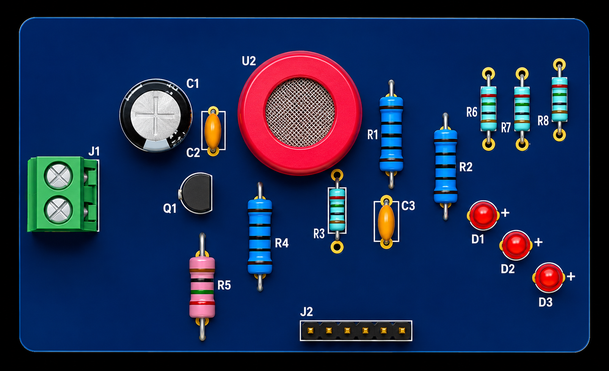
La primera etapa consistió en implementar el circuito de monitoreo utilizando el sensor MQ-7 y la plataforma PSoC 5LP. Se diseñó una etapa independiente para el calentador del sensor y se incorporó un circuito de señalización mediante tres LED.
Se realizaron las conexiones entre el sensor, la etapa de potencia y las entradas y salidas de la tarjeta de desarrollo. La alimentación del calentador se mantuvo independiente de la alimentación lógica del PSoC, evitando que la corriente requerida por el sensor circulara a través del regulador de la tarjeta.
Una vez establecida la conexión del hardware, se configuró el proyecto en PSoC Creator. Se implementó un ADC Delta-Sigma de 12 bits para adquirir la señal analógica del sensor, junto con las salidas digitales destinadas al control del calentador y los indicadores LED.
La temporización se realizó mediante una interrupción de 1 ms, utilizada para construir una base de tiempo de un segundo. Con esta referencia se controlaron las fases de calentamiento de 60 y 90 segundos.
El firmware también incorporó comunicación UART a 115200 baudios para transmitir al computador los valores obtenidos durante las pruebas. Cada lectura promediaba 32 conversiones del ADC y se utilizaba el comportamiento de la resistencia del sensor para estimar la respuesta ante el estímulo.
Se implementaron diferentes modos de operación: un modo de uso real con el ciclo completo del MQ-7 y modos de demostración que permitían observar la respuesta del sensor en intervalos más cortos.
Se midió la tensión aplicada al calentador durante las dos fases de operación y se registró su duración. Para ello se utilizó un multímetro y se contrastaron los tiempos con los registros de comunicación serial.
Esta etapa permitió identificar una caída de tensión durante la fase alta del PMV, asociada a la etapa de conmutación implementada con el transistor 2N2222. La observación se convirtió posteriormente en uno de los criterios para seleccionar una nueva etapa de conmutación.
Se realizaron pruebas en aire limpio y pruebas de exposición a estímulos de combustión. Se registró la tensión de salida del sensor y se observó el comportamiento de los indicadores LED.
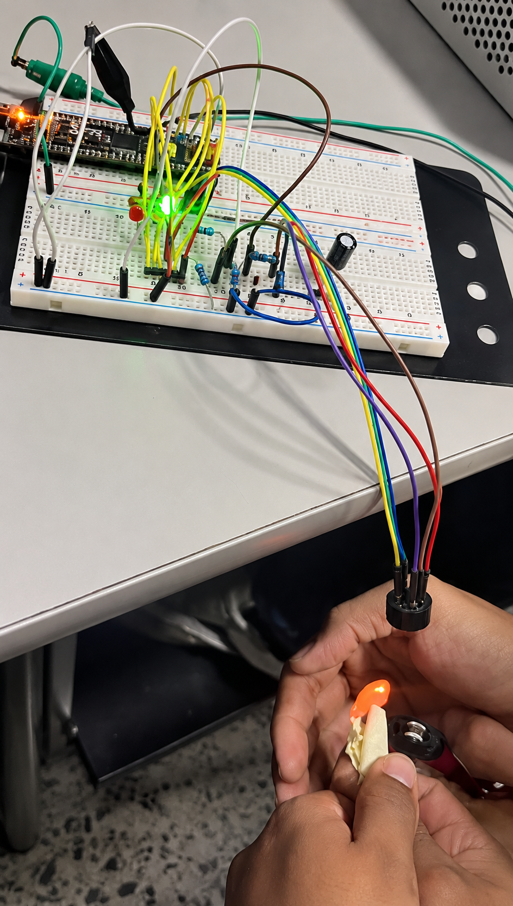
Se comprobó la correspondencia entre las lecturas transmitidas por UART y el estado de los LED. En el firmware se establecieron tres niveles de indicación: verde para valores inferiores a 30 ppm estimadas, amarillo para valores entre 30 y 87 ppm, y rojo para valores iguales o superiores a 87 ppm.
También se verificó la detección de fallas. Cuando la salida del sensor se encontraba fuera del intervalo válido establecido en el firmware, el LED rojo parpadeaba y el monitor serial presentaba el mensaje correspondiente.
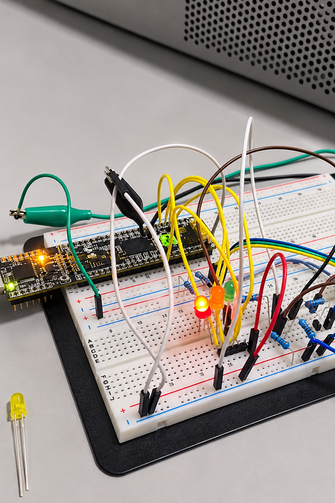
Después de las pruebas del PMV se identificaron oportunidades de mejora relacionadas con la etapa de conmutación del calentador, el rango de la resistencia de carga, la cantidad de sensores disponibles, la ausencia de una alerta sonora y la conexión mediante cables Dupont.
Estos hallazgos se utilizaron como punto de partida para desarrollar una tarjeta de expansión más completa, con conectores orientados a la integración con el CY8CKIT-059, dos canales de sensado y elementos adicionales de señalización.
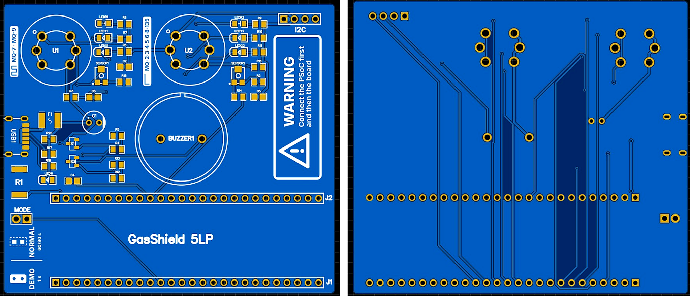
El rediseño se desarrolló en EasyEDA. Se organizaron los componentes en el esquemático y se definieron las conexiones correspondientes a la alimentación, los sensores, las etapas de conmutación, los indicadores LED, el buzzer y las interfaces de comunicación.
Posteriormente se realizó la distribución física de los componentes y el trazado de pistas. Se revisaron las dimensiones de la tarjeta, la ubicación de los conectores y la correspondencia entre las huellas y los componentes seleccionados.
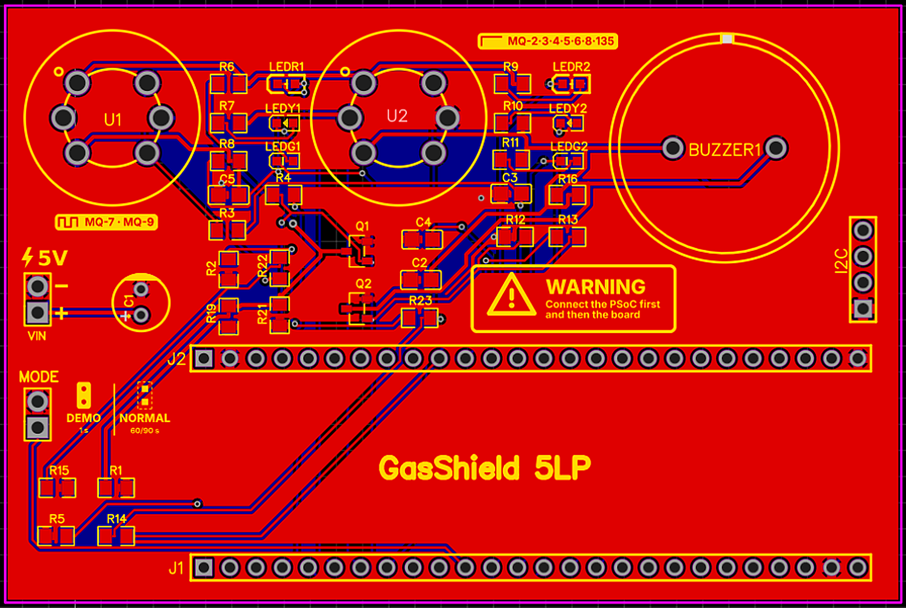
Para la fabricación física del PMV se preparó el diseño de la placa y se utilizó una máquina de fresado CNC para realizar el mecanizado del material de cobre. Este procedimiento permitió obtener una tarjeta funcional para las pruebas experimentales del primer prototipo.
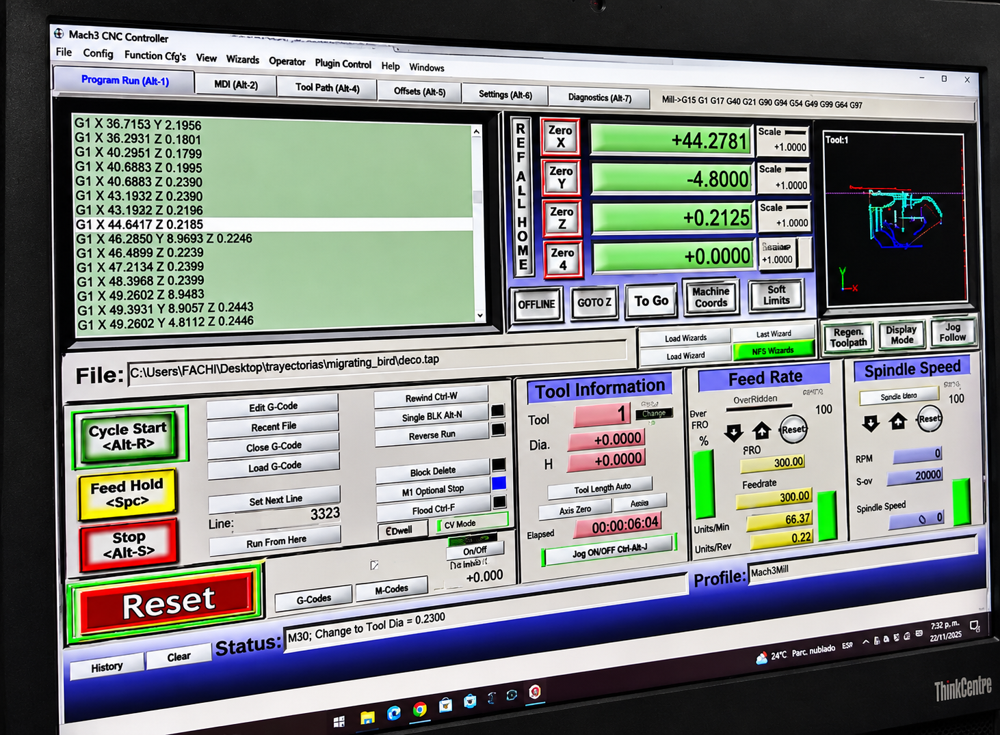
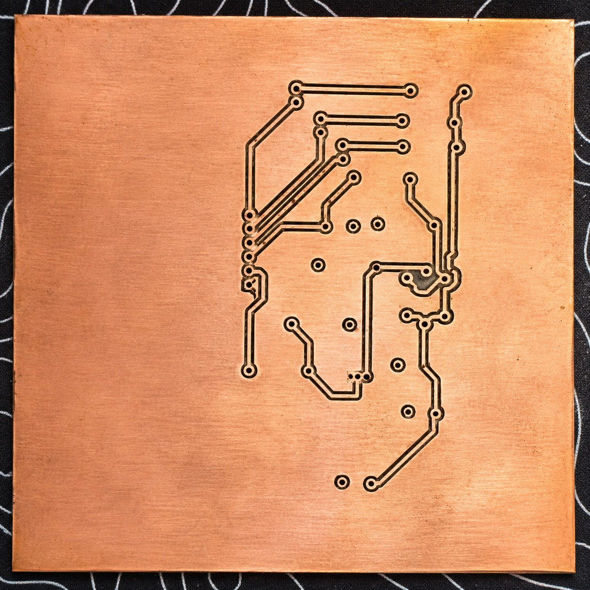
Las versiones 2.0 y 2.1 se prepararon para fabricación industrial mediante archivos de diseño y documentación de producción. Sin embargo, estas dos revisiones no llegaron a fabricarse físicamente durante el desarrollo documentado.
La evolución del GasShield 5LP se orientó a corregir las limitaciones identificadas en el PMV y preparar una tarjeta más completa, organizada y compatible con procesos de fabricación industrial.
La versión 2.0 incorporó dos canales de sensado, un sistema de alimentación mediante USB-C con fusible reiniciable, un buzzer, un conector I2C para pantalla LCD, un selector de modo y dos semáforos LED.
La primera revisión del rediseño se organizó alrededor de dos canales de sensado. El canal U1 admite sensores MQ-7 o MQ-9 con un ciclo de calentamiento de 5 V y aproximadamente 1,4 V. El canal U2 permite utilizar sensores MQ-2, MQ-3, MQ-4, MQ-5, MQ-6, MQ-8 o MQ-135, con alimentación fija de 5 V.
La tarjeta cuenta con una entrada USB-C destinada a la alimentación, un fusible reiniciable de 0,75 A, LED de encendido, dos semáforos, buzzer piezoeléctrico, conector de cuatro pines para LCD mediante I2C y un jumper para seleccionar el modo DEMO/NORMAL.
Su PCB se diseñó en dos capas, con dimensiones de 80 × 70 mm.
La versión 2.1 se desarrolló con el propósito de reducir el costo de fabricación y ensamblaje, conservando las funciones principales de la versión anterior.
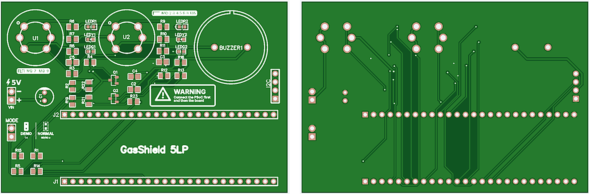
Entre los cambios realizados se encuentra la sustitución de la entrada USB-C por un conector VIN de dos pines, la eliminación del fusible y del LED de encendido, y la utilización de una resistencia de carga fija de 24,2 kΩ.
Se mantuvieron los dos canales de sensado, los semáforos, el buzzer y las interfaces de expansión. La tarjeta se rediseñó con dimensiones de 87 × 58 mm y dos capas.
| Característica | Versión 2.0 | Versión 2.1 |
|---|---|---|
| Alimentación | USB-C, fusible de 0,75 A | Conector VIN de 2 pines, sin fusible |
| Canal U1 | MQ-7 / MQ-9 | MQ-7 / MQ-9 |
| Canal U2 | MQ-2 a MQ-135 compatibles | MQ-2 a MQ-135 compatibles |
| Resistencia de carga | Ajustable de 2,2 a 52,2 kΩ | Fija de 24,2 kΩ |
| Señalización | Dos semáforos y buzzer | Dos semáforos y buzzer |
| Interfaz LCD | Conector I2C | Conector I2C |
| Dimensiones PCB | 80 × 70 mm | 87 × 58 mm |
| Componentes SMD ensamblados | 36 | 32 |
| Costo cotizado | USD 29,98 sin cupón | USD 15,65 sin cupón |
La comparación económica muestra una reducción de USD 14,33 en la cotización de fabricación de cinco PCB con dos unidades ensambladas, equivalente aproximadamente al 47,8 %. Los valores corresponden a cotizaciones sin incluir envío ni componentes THT adquiridos por separado.
Las pruebas experimentales descritas en este apartado corresponden al PMV construido y validado físicamente. Las mediciones permitieron comprobar el comportamiento del calentador, la respuesta del sensor y el sistema de señalización.
Se midieron la tensión y la corriente durante las dos fases de operación del sensor MQ-7. Los resultados obtenidos fueron:
| Parámetro | Fase alta | Fase baja |
|---|---|---|
| Tensión medida | 4,59 V | 1,39 V |
| Corriente medida | 140,2 mA | 47,5 mA |
| Duración programada | 60 s | 90 s |
Los valores permitieron comprobar la alternancia entre las dos fases de calentamiento. Sin embargo, la tensión de 4,59 V obtenida en la fase alta quedó por debajo del valor de referencia de 5,0 ± 0,1 V establecido en el diseño. Esta diferencia fue identificada como una de las limitaciones de la etapa de conmutación del PMV.
Durante las pruebas en aire limpio se registró una tensión de salida cercana a 1,945 V. Posteriormente, al exponer el sensor a humo, la tensión aumentó hasta 3,698 V.
Este cambio representa un incremento aproximado del 90 % respecto a la línea base, superando el criterio experimental establecido de un incremento mínimo del 30 % ante estímulos de combustión.
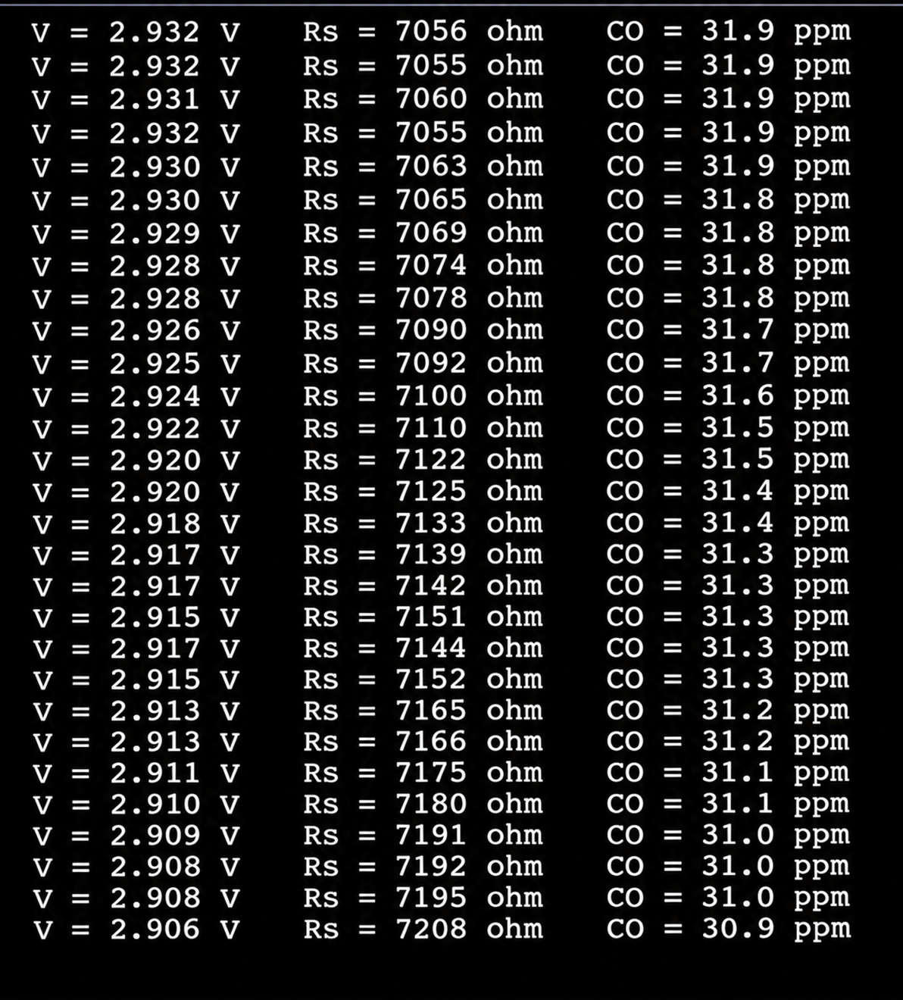
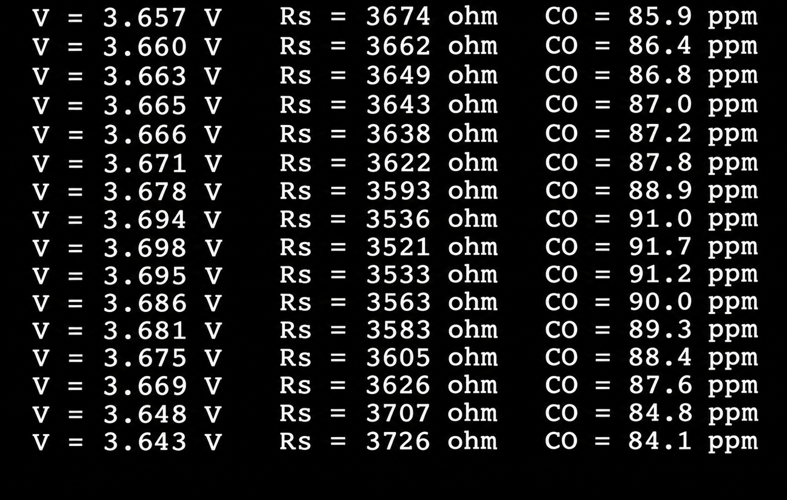
Durante la prueba con humo de papel quemado, el semáforo cambió del estado verde al rojo en aproximadamente 10 segundos. Una vez dispersado el humo, el indicador regresó al estado verde.
También se verificó el comportamiento del sistema ante la desconexión del sensor. Al retirar el MQ-7, el firmware identificó una lectura fuera del rango válido, activó el parpadeo del LED rojo y transmitió el mensaje «FALLA» mediante UART.
Para las versiones 2.0 y 2.1 se realizaron verificaciones eléctricas y físicas en EasyEDA. Los resultados obtenidos fueron los siguientes:
| Verificación | Versión 2.0 | Versión 2.1 |
|---|---|---|
| Componentes | 44 | 41 |
| Redes verificadas | 33/33 | 29/29 |
| ERC | Sin errores | Sin errores |
| DRC | 0 errores | 0 errores |
| Verificación Gerber | Conectividad corregida | Sin cortos ni redes abiertas |
Estos resultados corresponden a verificaciones realizadas sobre los archivos de diseño. No deben interpretarse como resultados de pruebas eléctricas o funcionales sobre placas fabricadas de las versiones 2.0 y 2.1.
Los resultados experimentales del PMV evidencian que fue posible integrar las etapas de alimentación, control del calentador, adquisición analógica y señalización visual en un sistema funcional. La respuesta del MQ-7 ante el estímulo de humo mostró una variación de tensión suficientemente amplia para ser identificada por el sistema de adquisición y procesada por el firmware.
El incremento de la salida desde 1,945 V hasta 3,698 V representa una variación cercana al 90 %. Este comportamiento supera el criterio de respuesta definido para la prueba y demuestra que el sensor produjo una señal diferenciable entre las condiciones evaluadas.
No obstante, la estimación de concentración en ppm debe interpretarse con precaución. El valor de referencia R0 utilizado en el firmware no se encontraba calibrado de forma definitiva, por lo que las concentraciones calculadas son indicativas y no pueden considerarse mediciones certificadas de CO.
En cuanto al calentador, la tensión de 4,59 V registrada durante la fase alta mostró una desviación respecto al valor de referencia. Este comportamiento permitió identificar la caída de tensión asociada al transistor utilizado en el PMV y justificó la selección del MOSFET AO3400A para el rediseño.
La detección de desconexión del sensor también constituye un resultado importante, ya que demuestra que el firmware no se limita a procesar lecturas, sino que incorpora una condición de identificación de fallas del sistema.
Por otra parte, las verificaciones ERC y DRC de las versiones 2.0 y 2.1 indican que los diseños cumplen las reglas eléctricas y físicas configuradas para su preparación. Sin embargo, una verificación digital no permite confirmar por sí sola el comportamiento térmico, eléctrico o funcional de una tarjeta fabricada.
Finalmente, la comparación económica muestra que la versión 2.1 reduce considerablemente el costo cotizado de fabricación. Esta reducción se consiguió mediante la simplificación de la alimentación y la selección de componentes SMD de menor costo, aunque implica prescindir de algunas características de protección presentes en la versión 2.0.
El desarrollo del PMV permitió comprobar la integración de un sensor MQ-7 con la plataforma PSoC 5LP, incluyendo el control de su calentador, la adquisición de la señal analógica y la implementación de un sistema de alertas visuales.
Las pruebas experimentales mostraron una respuesta diferenciable del sensor ante el estímulo de humo, con un incremento aproximado del 90 % en la tensión de salida respecto a la línea base registrada. También se verificó el funcionamiento del sistema de señalización y la detección de desconexión del sensor.
A partir de las limitaciones identificadas se desarrollaron dos propuestas de evolución de la tarjeta: GasShield 2.0 y GasShield 2.1. Ambas incorporan mejoras de arquitectura, conectividad y preparación para fabricación.
La versión 2.1 presentó una reducción importante en el costo cotizado respecto a la versión 2.0, conservando las funciones principales previstas para la tarjeta.
Se concluye que el PMV cuenta con validación experimental de sus funciones principales, mientras que las versiones 2.0 y 2.1 cuentan con verificación digital del diseño. Por tanto, no es correcto atribuir a estas últimas resultados de fabricación o pruebas físicas que todavía no se han realizado.
También se utilizaron como fuentes principales los documentos técnicos del desarrollo del PMV y del rediseño GasShield 5LP, elaborados en el marco de la asignatura Electrónica Analógica III, Universidad Surcolombiana, 2026.
Un equipo conformado por personas que comparten conocimientos, ideas y experiencias para desarrollar proyectos y afrontar nuevos desafíos tecnológicos.
Equipo de trabajo
Ver portafolioEquipo de trabajo
Ver portafolioEquipo de trabajo
Ver portafolioEquipo de trabajo
Si tienes alguna pregunta, propuesta, opinión o simplemente deseas ponerte en contacto conmigo, estaré encantado de recibir tu mensaje.
Estoy abierto a compartir conocimientos, conversar sobre proyectos y explorar nuevas oportunidades relacionadas con la ingeniería.
Completa los siguientes campos para comunicarte conmigo.